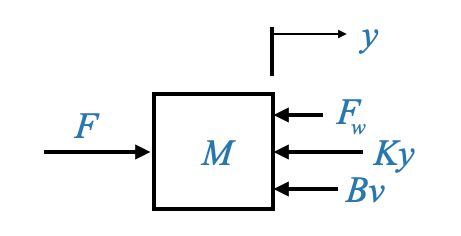
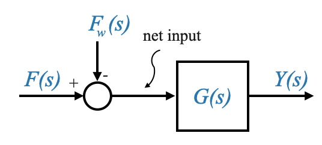
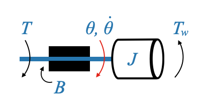
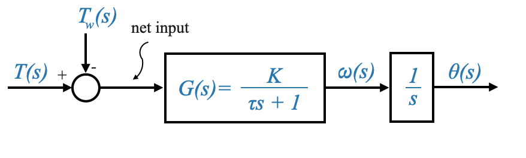
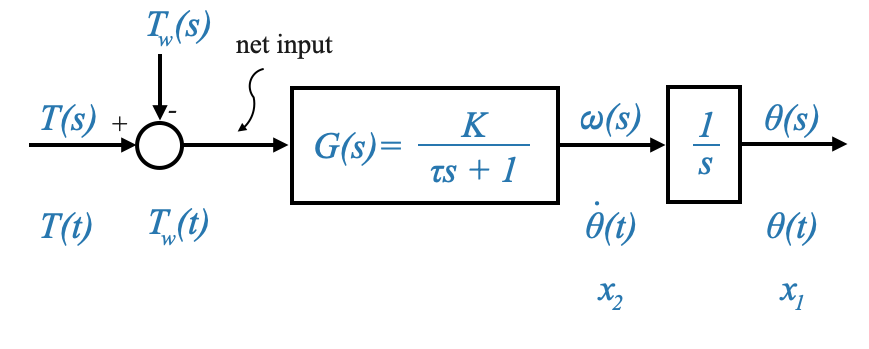
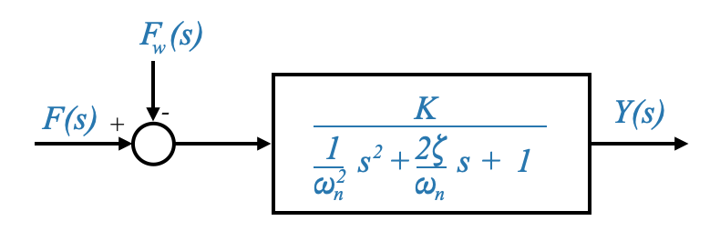
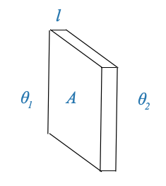
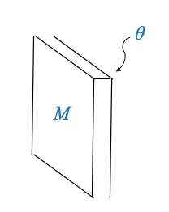
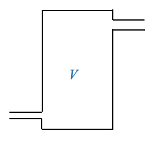

Introduction to Modeling of Dynamic Systems
Modeling serves as the backbone for understanding and manipulating dynamic systems. These dynamic systems encompass various components:
- Plants
- Controllers
- Sensors
- Actuators
- Any other intervening devices
The primary goal? To establish precise equations that define these dynamic systems.
Recalling our previous discussions, our focus has always been on applying physical laws. By doing so, we can transform the derived differential equations into more digestible forms. Two such forms that we’ll extensively use are:
- State variable models
- Transfer function models
These models offer a structured way to represent systems mathematically, allowing for analysis and design.
Mechanics
While this might feel like revisiting old territory, a review of the mechanics of translation is important. This is because the physical models we use in control systems are derived from these very principles.
Under the umbrella of mechanics of translation, three fundamental elements emerge:
- The ideal mass \(M\)
- The friction coefficient \(B\)
- The spring constant \(K\)
Mass
The component \(M\), representing the ideal mass, is a simplification, a lumped parameter idealization of a distributed mass. In real-world scenarios, you wouldn’t encounter a single particle of mass \(M\). This is an approximation where we assume that the entire mass is centered at its centre of gravity.
Pop-up Question: Why do we use lumped parameter idealization for the ideal mass \(M\) in dynamic systems?
Answer: We use lumped parameter idealization to simplify the representation of distributed masses by approximating them as a single point mass concentrated at its centre of gravity. This makes modeling and analysis more tractable.
Friction
The friction coefficient \(B\) presents its own set of challenges. Friction can arise due to various phenomena, hence different models might be necessary.
For instance, constant drive friction between surfaces would result in a constant frictional force for all velocities, known as Coulomb friction.
On the other hand, when two surfaces slide with a viscous medium in between, the frictional force is typically proportional to velocity, leading to the equation \(F=Bv\), where \(B\) is the coefficient of viscous friction. This model is prevalent when a solid body interacts with a fluidic medium.
It’s essential to acknowledge the presence of other friction types, like Coulomb friction, in devices like DC motors due to brush contact. But since our initial discussions revolve around linear models, we’ll consider all non-linear frictions as disturbances on the system.
Springs
Lastly, the spring constant \(K\) comes into play when there’s elastic deformation. Here, the force due to the spring effect is given by \(F=Kx\), where \(x\) is the displacement.
Note: It’s essential to understand that these models, while incredibly useful, are approximations. They simplify real-world complexities into digestible chunks that can be used for design and analysis.
Deriving the Mathematical Model
Let’s consider a complex mechanical system, in this case, a car’s suspension system, and see how we can approximate it through a simpler mass, spring, damper.
Given a physical system, our first step is to derive its mathematical model. This is essential for analysis or design.
Let’s take, for instance, the load on a system comprising the mass of a power piston, the drive linkage, and wheels. All these components have distributed masses. However, for our model, we’ll simplify this as a single particle of mass \(M\).
In our case, the distributed mass is the mass of the power piston, the mass of the drive linkage and the mass of the wheels. But we will model all this as a particle mass \(M\).
Frictions in our system arise from various sources, such as the motion of a piston in a viscous medium or the interaction between the drive linkage and its surroundings. We’ll model these frictions using the parameter \(B\) and a Viscous Friction.
The tires on the road could create a Coulomb Friction, but we will consider this as a disturbance acting on our system.
Finally, the elastic behaviour of the tires can be modeled through a spring with parameter \(k\).
With these considerations we can model the cat’s suspension system with:

|
This transformation, while involving various approximations, has proven to be effective for control system design.
We saw that depending on the \(\zeta\) parameter we have undamped (\(\zeta=0\)), damped (\(0<\zeta<1\)), critically damped (\(\zeta=1\)) and over damped systems (\(\zeta>1\)).
In some situations, we might need to introduce intentional friction to control the system’s damping. This can be achieved using a device called a dashpot, which uses an oil medium to provide resistance against motion.
The same symbol (dashpot) we will use for intentional and unintentional friction.
Physical models and approximations
Any physical situation, be it in nature or industry, especially if it pertains to a mechanical system in translational mode, can be modeled using the principles we’ve discussed. This representation will serve as our main model.
However, as we move forward, it’s essential to recognize the complexities and approximations we’ve employed. Every model we derive has its roots in various assumptions and simplifications, which are vital to making the model manageable.
Consider the parameters \(M\) (the ideal mass), \(K\) (the spring constant), and \(B\) (the dash pot constant or viscous friction constant). In our model, \(F_\omega\) signifies a disturbance force acting on the system. It could be attributed to uncontrolled friction or even environmental factors. We’ve chosen the symbol “\(\omega\)” to represent disturbances.
The variables \(y\) and \(v\) denote displacement and velocity, respectively.

|
Pop-up Question: Why do we need to model disturbances in our system? Answer: Disturbances can affect the performance and stability of a control system. By modeling them, we can design control strategies to mitigate their effects and ensure the system operates as intended.
To transition this physical model into a differential equation model, it’s often useful to sketch a free body diagram.
|  |
This diagram visualizes the masses as nodes, and the forces acting on them are depicted with arrows. For our current system, we have a single mass, \(M\), with an applied force \(F\) and a disturbance force \(F_\omega\). Additionally, the spring force \(Ky\) and frictional force \(Bv\) oppose the motion. We must also consider the inertial force due to the mass \(M\) itself, which counteracts the movement.
A crucial principle in mechanics is the force balance equation, which states that forces promoting motion should equal forces opposing it. Therefore, our equation becomes:
\[ M\dot{v} + B{v} + Ky = F - F_\omega \]
Here, \(F-F_\omega\) is the net force acting to the system.
\(\dot{v}\) denotes acceleration, and \(F_\omega\) can either assist or counteract (it is an algebric quantity) the applied force \(F\) depending on its nature. It’s worth noting that even if \(F_\omega\) assists the motion, it’s still considered a disturbance, as the system wasn’t designed with it in mind.
We can convert this to a state variable model:
\[ \begin{align} x_1 &= y\\ x_2 &= v = \dot{y} \end{align} \]
and we saw how to do this already. Let’s instead focus on the transfer function model.
Transforming into Transfer Function Model
Every control system can be portrayed in the Laplace domain, making it easier to analyze and design control strategies. For our system, the transfer function is a relation between a single input and output. However, note that the system is a two inputs (\(F, F_\omega\)), one output (\(y\)).
We can re-write our equation to explicit the output variable:
\[ M\ddot{y} + B\dot{y} + Ky = F - F_\omega \]
The Transfer Function is a SISO description and hence, using as a block diagram:
|  |
We can hence write the transfer function between \(Y(s)\) and \(F(s)\), and between \(Y(s)\) and \(F_\omega(s)\)
Given the above representation, we can express the transfer function between \(Y(s)\) and \(F(s)\) (assuming \(F_\omega(s)=0\)) as:
\[ \frac{Y(s)}{F(s)} = \frac{1}{Ms^s+Bs+K} \]
and this is also the transfer function between \(Y(s)\) and \(F_\omega(s)\).
We can then call:
\[ \frac{Y(s)}{F(s)} = \frac{1}{Ms^s+Bs+K} = G(s) \]
With some simplification and standardization, and considering the system’s damping and natural frequency, we get:
\[ G(s)=\frac{1/K}{\frac{M}{K}s^s + \frac{B}{K}s + 1} = \frac{K_S}{\frac{1}{\omega_n^2}s^2 + \frac{2\zeta}{\omega_n} s + 1 } \]
Where I called \(K_S\) the system gain to differentiate it from \(K\).
This function, termed as the quadratic lag, is a second-order lag in contrast to the first-order (or simple) lag we previously discussed.
Units
The importance of understanding these units and parameters cannot be overstated. They form the foundation upon which our mathematical models are built, allowing us to make predictions, design controllers, and understand system behavior.
- Force: Newtons, \(N\)
- Displacement \(y\): Meters, \(m\)
- Velocity \(v\): Meters/second, \(m/s\)
- Acceleration: Meters/second^2, \(m/s^2\)
- Mass \(M\): kilograms, \(kg\), (\(F=M\ddot{y}\)) and hence also \(N/(m/s^2)\)
- Friction Coefficient \(B\): Newtons/(meters/second), \(N/(m/s)\) (\(F=Bv\))
- Spring Constant \(K\): Newtons/meter, \(N/m\) (\(F=Kx\))
Pop-up Question: What distinguishes a second-order lag (quadratic lag) from a first-order (simple) lag?
Answer: A second-order lag has a quadratic term (s^2) in the denominator, while a first-order lag only has a linear term (s). This makes the second-order system more complex, with properties like oscillations and overshoot that aren’t present in a first-order system.
Fixed axis rotational systems
Moving on to rotational systems, we find parallels with our previous discussions. Key parameters here include:
- \(J\): Moment of inertia of the system (Remember that the inertial torque due to \(J\) opposes the motion).
- \(B\): Viscous friction coefficient
- \(K\): Spring constant (though often ignored in many applications)
Consider, for instance, the steering of an antenna.
The moment of inertia of the antenna might be represented by the \(J\) parameter. Yet, this parameter might also account for the inertia of other components, such as the motor rotor, shaft, and even gears. As before the elements are distributed, but all these are lumped together into a single parameter for modeling.
Similarly, the frictional effects (e.g., bearings, etc) are encapsulated within the \(B\) parameter. Remember, damping forces play a crucial role in controlling the oscillations in a system and ensuring it settles to a stable position over time.
Here, we usually encounter two main parameters, \(J\) and \(B\).
In these systems, we often neglect the spring effect \(K\) due to the short length of shafts and the relatively low torques generated. \(K\) is due to the torsional effect of the shaft. However, in certain applications, like robot-controlled systems, the flexibility of the shaft becomes significant, warranting the inclusion of the \(K\) parameter.
To establish a mathematical model for such a system, we’ll represent the inertial element \(J\), applied torque \(T\), and frictional effect \(B\).
|  |
For our free-body diagram, the applied torque \(T\) opposes the disturbance torque \(T_\omega\), and the frictional torque \(B\dot{\theta}\) (where \(\dot{\theta}\) is the angular velocity) opposes the motion.

|
Using similar principles as before, our equation becomes:
\[ J\ddot{\theta} + B \dot{\theta} = T − T_\omega \]
Where:
- \(J \ddot{\theta}\) is the inertial torque.
- \(B \dot{\theta}\) is the damping torque.
- \(T\) is the applied torque.
- \(T_\omega\) is the disturbance torque.
The transfer function model for this system, considering \(\theta(s)\) as the output variable, can be given by:

|
Where:
\[ G(s) = \frac{1}{Js^2+Bs}=\frac{1}{s(Js+B)} \]
Expressing the transfer function in its standard form:
\[ G(s) = \frac{1}{s(Js+B)} = \frac{1/B}{s(\frac{J}{B} s+1)} = \frac{K}{s(\tau s + 1)} \]
Where:
- \(K=\frac{1}{B}\) is the system gain.
- \(\tau=\frac{J}{B}\) is the time constant of the system.
The time constant, \(\tau\), represents how quickly the system responds to changes in input, with smaller values indicating faster responses.
This system is composed by an integrator \(\frac{1}{s}\), and \(\frac{K}{(\tau s + 1)}\) is a simple lag, cascaded together.
Changing output variable
We previously focused on the rotational system where the angular displacement, \(\theta\), was the primary output variable of interest. However, in some applications, it might be more pertinent to consider the angular velocity, \(\omega\) (or \(\dot\theta\)), as the output variable.
If we change our output variable to angular velocity, our governing differential equation changes. Specifically, the equation becomes: \[ J\dot{\omega} + B {\omega} = T − T_\omega \]
Where:
- \(J \dot\omega\) denotes the inertial torque due to acceleration.
- \(B\omega\) signifies the damping torque due to velocity.
- \(T\) and \(T_\omega\) are, as before, the applied and disturbance torques respectively.
Transforming the above differential equation into the Laplace domain, and considering \(\omega(s)\) as the output variable, the transfer function becomes:
\[ G(s) = \frac{K}{\tau s + 1} \]

|
Where:
- \(K=\frac{1}{B}\) is the system gain.
- \(\tau=\frac{J}{B}\) is the time constant of the system.
- System Gain, \(K\): It signifies how the system’s angular velocity, ω, changes with variations in torque. A larger \(K\) means the system is more sensitive to torque changes.
- Time Constant, τ: This represents how quickly the system’s angular velocity responds to changes in input torque. A smaller τ indicates a faster response.
Pop-up Question: Why might we be interested in angular velocity as the output rather than angular displacement? Answer: Angular velocity can be crucial in scenarios where the speed of rotation is more critical than the position, such as in motors, turbines, or any system where rotational speed control is essential.
Switching the output variable from angular displacement to angular velocity changes the system dynamics:
- The system now primarily responds to changes in speed rather than position.
- Control strategies might differ, focusing on maintaining or adjusting speed rather than achieving a particular position.
For instance, in a servo motor application where the objective is to maintain a constant speed under varying load conditions, angular velocity as the output variable would be more relevant than angular displacement. Conversely, for a robotic arm’s precise positioning, angular displacement might be the more appropriate output variable.
We can now revisit the system when the output was the position:
|  |
A motor that is position controlled has an integrating effect. There is not physical integrator but the overall effect is that of an integrator.
From a transfer function block diagram to state variables models
Note also that if we are given a transfer function diagram model, the output of an integrator are suitable state variables.
It is important to also realise the the output of a first-order lag is the same of an integrator along with a filter. So its output is also a suitable state variable.
|  |
And from the diagram above we can easily calculate the state model.
From the integrator on the right we obtain:
\[ \dot{x_1}=x_2 \]
and from the first-order lag we obtain:
\[ \tau\dot{x_2} + x_2 = K(T-T_\omega) \]
and finally we can find the matrices \(A\), \(b\), \(c\) and \(d\) to have it in the standard form.
Think about what happens with a second-order lag (e.g., the mass-sping-damper system).
A second-order lag will be modeled with two state variables, but in this case they are not available as output of an integrator.
|  |
The state variable selection is not unique, but one option that will work is to take the output as one of the state variables, and its derivative as the other state variables. In this case:
\[ \begin{align*} x_1 &= y\\ x_2 &= \dot{y} = \dot{x_1}\\ \end{align*} \]
Which gives the first equation:
\[ \begin{align} \dot{x_1}=x_2 \end{align} \]
And for the second equation we can write:
\[ \frac{1}{\omega_n^2}\ddot{y} + \frac{2\zeta}{\omega_n} \dot{y} + y = K(F-F_\omega) \]
from which we derive:
\[ \begin{align} \dot{x_2}= \Big[ -x_1 - \frac{2\zeta}{\omega_n}x_2 + K(F-F_\omega) \Big] \omega_n^2 \end{align} \]
Note that there are two inputs: \(F\) and \(F_\omega\) and hence the state variable model will be:
\[\begin{aligned} \begin{bmatrix} \dot{x}_1(t) \\ \dot{x}_2(t) \\ \end{bmatrix} &= \begin{bmatrix} a_{11} & a_{12} \\ a_{21} & a_{22} \\ \end{bmatrix} \begin{bmatrix} x_1(t) \\ x_2(t) \\ \end{bmatrix} + \begin{bmatrix} b_{11} & b_{12} \\ b_{21} & b_{22} \\ \end{bmatrix} \begin{bmatrix} F(t) \\ F_\omega(t) \\ \end{bmatrix} \end{aligned}\] \[\begin{aligned} y(t) = \begin{bmatrix} c_{1} & c_{2} \\ \end{bmatrix} \begin{bmatrix} x_1(t) \\ x_2(t) \\ \end{bmatrix} + \begin{bmatrix} d_{11} & d_{12} \\ \end{bmatrix} \begin{bmatrix} F(t) \\ F_\omega(t) \\ \end{bmatrix} \end{aligned}\]Note that \(F_\omega\) is a disturbance but it is an input in the model.
Units
The importance of understanding these units and parameters cannot be overstated. They form the foundation upon which our mathematical models are built, allowing us to make predictions, design controllers, and understand system behavior.
- Torque: Newtons\(\cdot\)m
- Displacement \(\theta\): Radians, \(rad\)
- Velocity \(\dot\theta\): Radians/second, \(rad/s\)
- Acceleration \(\ddot\theta\): Radians/second^2, \(rad/s^2\)
- Friction Coefficient \(B\): Newton-m/(rad/second) - from \(T=B\dot{\theta}\)
- Moment of inertia \(J\): Newton-m/(rad/sec^2) or kg-m^2
Introduction to Thermal Systems in Automatic Control
Two other essential systems in control engineering are thermal systems and liquid level systems. These systems follow the same principles of control as mechanical systems, but with different parameters and components.
- Thermal Systems: These deal with heat conduction, radiation, and convection.
- Liquid Level Systems: These focus on the dynamics of liquid storage and flow.
Heat Transfer Through a Solid Wall
Consider a wall made of any material with a surface area \(A\) (\(m/s^2\)) and thickness \(l\) (\(m\)).
Let \(\theta_1\) (\(^oC\)) and \(\theta_2\) (\(^oC\)) be the temperatures on either side of this wall.
|  |
The heat transfer through this wall can be described by the following equation:
\[ h = \frac{\sigma A(\theta_1−\theta_2)}{l} \]
Where: - \(h\) is the heat transfer rate (in Joules per second). - \(\sigma\) is the thermal conductivity of the material.
From an analogous perspective, considering \(h\) to be similar to current and the temperature difference \(\theta_1−\theta_2\) to be similar to voltage, the above equation can be viewed as:
\[ h = \frac{\theta_1−\theta_2}{R} \]
Where: - \(R = \frac{l}{\sigma A}\) is the conductive resistance of the material.
Heat Transfer at the Liquid-Solid Interface
Consider a solid-liquid interface, where heat is being transferred. Let \(U\) be the film coefficient at this interface, and \(A\) be the contact surface area.
The heat transfer in this scenario can be described by:
\[ h = UA(\theta_1−\theta_2) \]
Where: - \(\theta_1−\theta_2\) is the net gradient across the film
or
\[ h = \frac{\theta_1−\theta_2}{R} \]
Where: - \(R = \frac{1}{U A}\) is the convective heat transfer resistance
Heat Storage in a Solid
Heat storage plays an important role in thermal systems. Consider the same wall described earlier.
|  |
The heat stored within this wall can be represented as:
\[ h=Mc\frac{d\theta}{dt} \]
Where:
- \(h\) is the heat flow rate in Joules/second
- \(M\) is the mass of the material
- \(c\) is the specific heat of the material
- \(\theta\) is the temperature of the material
The equation can be written as:
\[ h = C\frac{d\theta}{dt} \]
Where: - \(C=Mc\) is the thermal capacitance of the material.
Heat Storage in a Solid
Heat storage plays a pivotal role in thermal systems. Consider the same wall described earlier.
Where:
- \(M\) is the mass
- \(\theta\) is the temperature
The rate of change of the heat stored within this wall can be represented as:
\[ h=Mc\frac{d\theta}{dt} \]
Where: - \(h\) is in Joules/second (rate of change of the heat stored) - \(c\) is the specific heat of the material.
The equation can be written as:
\[ h=C\frac{d\theta}{dt} \]
Where:
- \(C=Mc\) is the thermal capacitance of the material.
Heat Storage in a Liquid Tank
Consider a tank containing a liquid with volume \(V\) at temperature \(\theta\).
|  |
The heat storage within the liquid can be represented as:
\[ h=V\rho c\frac{d\theta}{dt} \]
Where:
- \(\rho\) is the density of the liquid (\(Kg/m^3\)).
- \(c\) is the specific heat of the liquid.
The equation can be written as:
\[ h=C\frac{d\theta}{dt} \]
Where:
- \(C=V\rho c\) is the thermal capacitance of the liquid.
Thermal systems have \(R\) and \(C\) equivalents (and no inductance equivalence).
Pop-up Question: Why do we often use the analogy of electrical circuits when analyzing thermal systems?
Answer: Analogizing thermal systems to electrical circuits allows us to apply familiar electrical circuit theory to understand and analyze the behavior of thermal systems. This approach simplifies complex thermal scenarios and provides intuitive insights.
Principle of Analogous Variables
In the vast realm of system dynamics, it’s often useful to draw parallels between different types of systems to simplify our understanding. One such approach is to analogize between mechanical and electrical systems. This analogy allows us to translate the behavior of one system type into another, giving us additional perspectives and tools for analysis and design.
At the core of the concept of analogous systems is the idea that different systems governed by similar differential equations will exhibit identical dynamic behavior. Therefore, if we study the response of one system, we can infer the behavior of its analogous counterpart.
To understand this, let’s consider an electrical circuit:

|
This electrical circuit is made up of a resistor (\(R\)), an inductor (\(L\)), and a capacitor (\(C\)), driven by a current source (\(i\)).
We can write the equation as:
\[ \frac{e}{R} + i_2 + C\frac{de}{dt} = i \]
\[ L\frac{di_2}{dt} = e \]
The current through the inductor and the voltage across the capacitor and we can derive the usual state variable model.
In drawing parallels between mechanical and electrical systems:
- Force in a mechanical system is analogous to voltage in an electrical system.
- Velocity or displacement in a mechanical system can be compared to current in an electrical system. Using these analogies, we can transform mechanical system models into equivalent electrical circuits. This equivalence allows for the application of well-established electrical circuit analysis techniques to mechanical systems.
The governing equation for this system can be written as:
\[ \begin{align} \frac{e}{R} + C \frac{de}{dt} + \frac{1}{L} \int_{-\infty}^{t} e(\tau) d\tau = i \end{align} \]
Where:
- \(e\) is the voltage across the components.
- \(i_2\) is the current through the inductor.